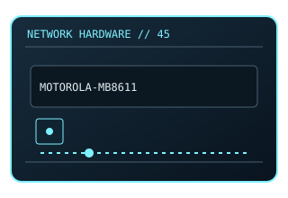

[ MODEL-SPECIFIC NETWORK HARDWARE ]
Motorola MB8611 DOCSIS 3.1 Cable Modem
DOCSIS 3.1 cable modem with 2.5GbE customer Ethernet port. This entry uses the labeled manufacturer model identifier and cites primary product/support documentation.

MODEL IDENTIFICATION: Match the complete model/part number and hardware revision on the item label to manufacturer documentation. Do not apply this entry to near-name variants.
Exact specifications and compatibility
| Cataloged model | Motorola MB8611 DOCSIS 3.1 Cable Modem |
|---|---|
| Dedicated subcategory | Modems and line-termination devices |
| Bus / host interface | Coaxial DOCSIS WAN to 2.5GbE RJ-45 Ethernet handoff. |
| Ports / physical interfaces | 1 × 2.5GbE Ethernet; DOCSIS 3.1 downstream/upstream channel bonding. |
| PHY, radio or protocol | DOCSIS 3.1; backward compatibility with DOCSIS 3.0 depends on ISP provisioning. |
| PoE | No PoE input or PoE output is documented for this product. |
| Link-rate vs throughput | Advertised downstream service rate is ISP/plan and node dependent; Ethernet PHY link is up to 2.5Gb/s, not a guaranteed Internet throughput. Link rates are nominal negotiated/PHY specifications, not measured application throughput; no measured specimen result is claimed. |
| Firmware / driver support | No user-side network driver generally required; modem firmware and activation are controlled by ISP. |
| Compatibility checks | Check ISP-approved device list, service tier, coax condition and provisioning before purchase. |
Model-specific notes
Keep ventilation clear and use the included power adapter; ISP approval is service-specific.
Primary manufacturer sources
- Motorola MB8611 official product informationManufacturer product specification or documentation for the exact model/family.
- Manufacturer support and compatibility resourcesFirmware, driver, compatibility, revision or support details; applicability may depend on the exact hardware revision and region.
Vendor maximum rates are not test results. Confirm regional variants, hardware revision and current support status with the manufacturer.